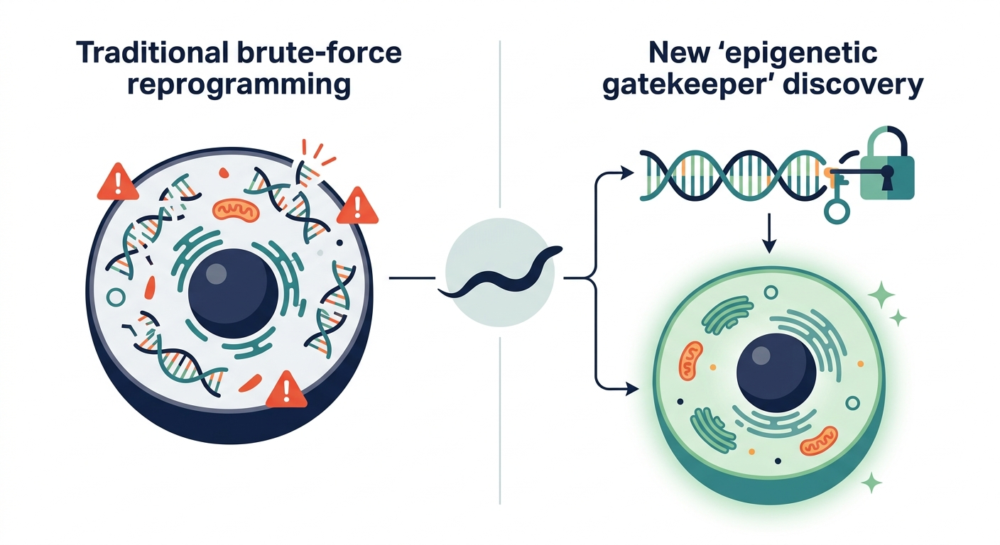

The Epigenetic Gatekeepers: Tiny Worms Reveal a New Class of Genes that 'License' Cellular Rejuvenation

Imagine trying to remodel a historic bank vault. For years, the prevailing strategy in regenerative medicine has been akin to using dynamite: blasting through the heavily reinforced doors using brute-force reprogramming factors to reset a cell’s identity. While this approach—epitomized by the famous Yamanaka factors—can successfully turn back the cellular clock, it often leaves a trail of genomic instability, sometimes triggering the chaotic, unregulated growth of tumors. Now, scientists have discovered a molecular locksmith that doesn’t blow the door off, but rather elegantly deactivates the security alarm, allowing for a controlled, natural transformation.
Writing in PLOS Genetics, researchers have mapped this delicate biological heist inside the humble roundworm, Caenorhabditis elegans. During its development, this tiny nematode performs a biological magic trick known as transdifferentiation, where a fully mature rectal cell (designated 'Y') naturally and seamlessly transforms into a functional motor neuron ('PDA'). By studying this process, the research team identified a novel gene called lin-15A, a THAP domain-containing factor. Rather than pushing the cell to change, lin-15A acts as an essential facilitator, preparing the cellular ground for a safe identity transition.
The core breakthrough lies in how lin-15A operates. In the cellular world, identity is aggressively guarded by chromatin-modifying complexes—epigenetic security guards that keep DNA tightly wound so a skin cell stays a skin cell, and a colon cell stays a colon cell. The researchers discovered that lin-15A acts not as a 'Driver' of change, but as a 'Licenser'. It selectively antagonizes these identity-safeguarding complexes, temporarily relaxing the chromatin architecture. This subtle softening of the cell’s epigenetic defense system allows the actual driver genes to step in and orchestrate the transition to a new cell type without destabilizing the entire genome.
For the longevity and biotech sectors, this 'licensing' framework is a paradigm shift. Current cellular rejuvenation therapies often struggle with the 'all-or-nothing' dilemma: reprogram too little, and the tissue remains aged; reprogram too much, and the cells lose their identity entirely, reverting to dangerous, pluripotent stem states that form teratomas. By targeting mammalian homologues of licensers like lin-15A, therapeutic developers could theoretically lower the epigenetic drawbridge just long enough to permit rejuvenation or targeted transdifferentiation, before allowing the natural safeguarding mechanisms to lock back into place.
However, the path from a nematode's tail to a human clinic is paved with immense hurdles. C. elegans possesses a highly deterministic, simple developmental blueprint; translating these precise genetic handshakes to mammalian biology is notoriously difficult. Mammalian chromatin safeguarding is exponentially more redundant and complex, meaning that disabling a 'licenser' could have unpredictable, systemic side effects. Furthermore, temporarily turning off cellular safeguards is a high-stakes gamble; if these barriers are lowered for even a fraction too long, cells may acquire dangerous mutations or drift into oncogenic states. Years of rigorous validation in mammalian models will be required before we can safely exploit these epigenetic keymasters in human medicine.
Sources & Citations:
Primary Source: The SynMuvA lin-15A licenses natural transdifferentiation by antagonizing identity safeguarding mechanisms (PLOS Genetics)
- Kagias, K., et al. (2024). "The SynMuvA lin-15A licenses natural transdifferentiation by antagonizing identity safeguarding mechanisms." PLOS Genetics, 20(11), e1012290. https://doi.org/10.1371/journal.pgen.1012290